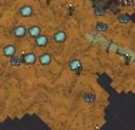

| Wilds | |
|  |
|
| Occasional | |
| Rare | |
The Wilds are one of the biomes found in the Ruins. These are the areas that the Ancients had not set up any structures the only hint of their activity are paths of Runic Turf leading to other biomes and the entrance to the Ruins, with the rest of the turf being exclusively Mud Turf. Lichen, Ponds, Light Flowers, Slurpers, Blue Mushrooms, and Fissures tend to be found in the Wilds. This biome is also infested with Depths Worms scattered randomly across this biome, waiting to ambush the player. Exploring the area would be a bit more dangerous.
| Biomes | |
| Surface | Chess • Grasslands • Graveyard • Forest • Marsh • Mosaic • Ocean • Rockyland • Savanna • Desert • Deciduous Forest |
| Caves | Mushtree Forest • Rocky Plains • Stalagmite Biomes • Sunken Forest • Cave Swamps |
| Ruins | Abyss • Labyrinth • Military • Sacred • Village • Wilds |
| Related | Bridges • Map • Road (Trail) • Turfs |